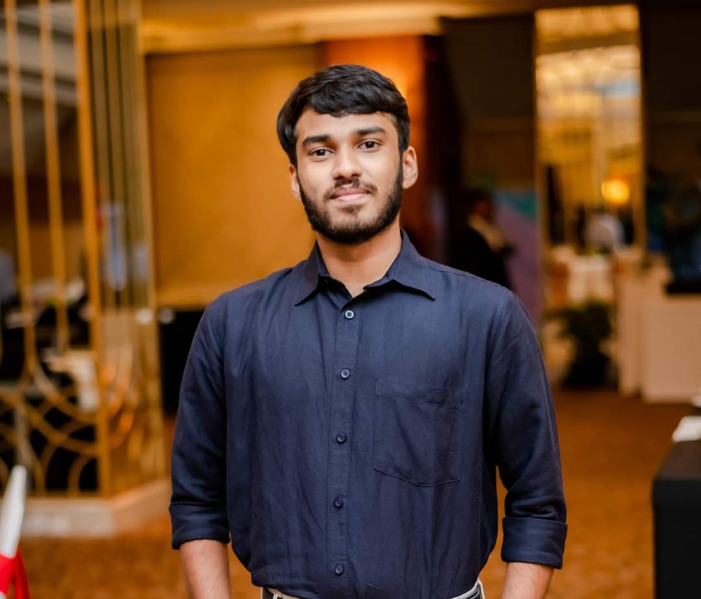
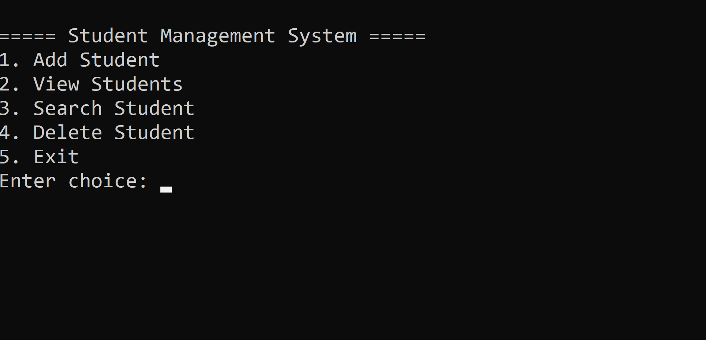
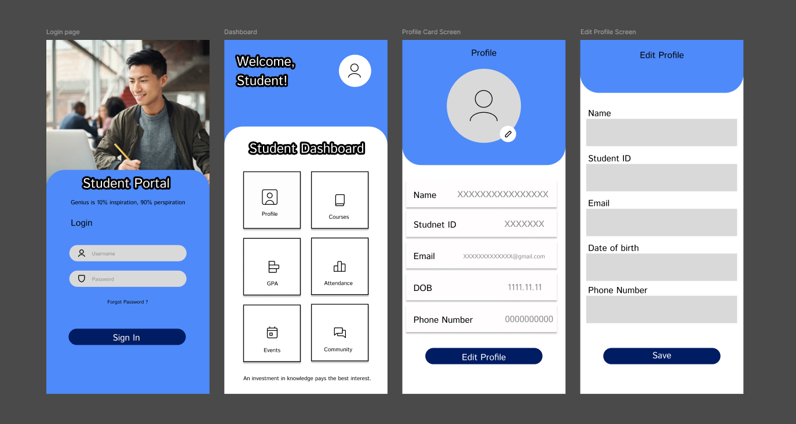
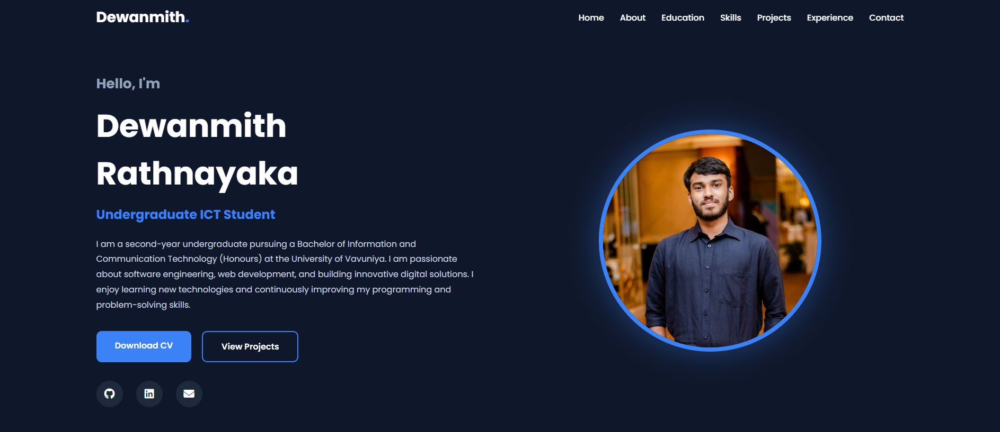

I am a passionate IT undergraduate dedicated to building innovative digital solutions and responsive web applications. I thrive on turning complex problems into clean, efficient code and am always eager to learn new technologies to bring creative ideas to life.

I am a second-year undergraduate pursuing a Bachelor of Information and Communication Technology (Honours) at the University of Vavuniya, with an expected graduation in 2028. My academic journey has fueled a strong interest in software development, modern programming languages, and emerging web technologies.
Beyond the classroom, I actively enjoy building applications, working with databases, and experimenting with front-end and back-end tools. Whether it's through university assignments or self-guided personal projects, I am constantly exploring new technologies to sharpen my technical problem-solving skills and gain hands-on, real-world development experience.
As I continue my studies, I am looking for opportunities—such as internships or collaborative projects—where I can expand my knowledge, contribute to meaningful software that makes a positive impact, and grow alongside a dynamic team.
2024 - Present
Currently following the Bachelor of Information and Communication Technology (Honours) Degree. Studying software engineering, web development, databases, networking, programming, and system analysis & design.
Engineering Technology Stream
Successfully completed G.C.E. Advanced Level with Engineering Technology, Information & Communication Technology, and Science for Technology.
C, C++, Java, C#, Python
HTML5, CSS3, JavaScript
MySQL
Git & GitHub
VS Code, Figma, Notepad++
Leadership, Teamwork, Communication, Problem Solving, Time Management

A desktop application developed to manage student records, attendance, academic details, and user information efficiently. The system improves data management and reduces manual work.

A responsive web application that allows students to access course information, announcements, and academic resources through an easy-to-use interface.

A responsive personal portfolio developed to showcase my education, technical skills, software projects, leadership experience, and professional profile.
Served as President Scout of the 32nd Colombo Nalanda College Scout Troop, demonstrating leadership, teamwork, and organizational skills.
Managed financial activities while organizing community service projects and leadership programs.
Developed discipline, communication, responsibility, and leadership through school administration activities.